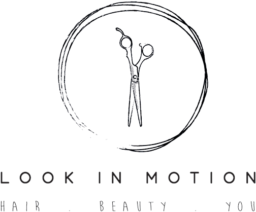
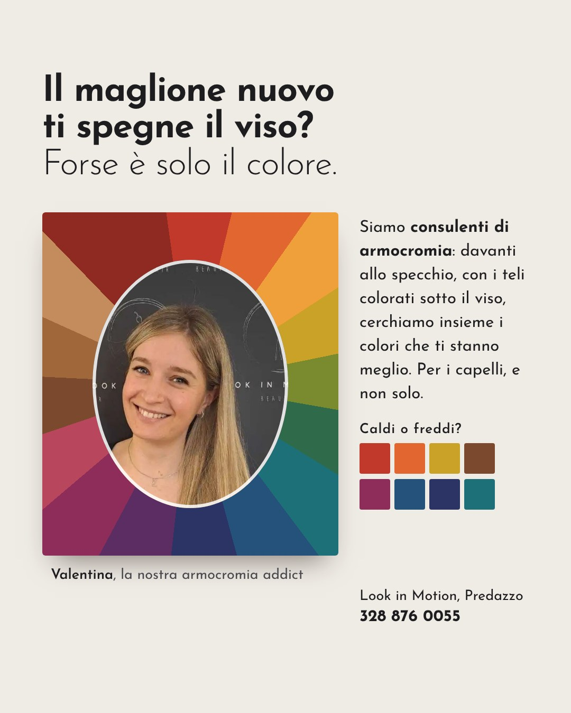
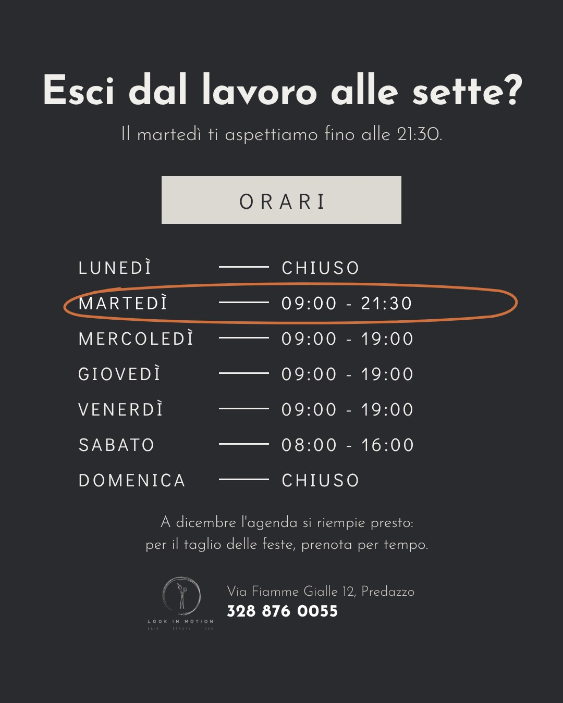

Pronti da pubblicare, con il vostro logo e le vostre foto. Scaricate l'immagine, copiate la didascalia e sono vostri.

look_in_motion_parrucchieriPredazzo

look_in_motion_parrucchieri Il maglione nuovo ti spegne il viso? Forse è solo il colore. 🎨
Siamo consulenti di armocromia: davanti allo specchio, con i teli colorati sotto il viso, cerchiamo insieme i colori che ti stanno meglio. Per i capelli, e non solo. Chiedi a Valentina!
📞 328 876 0055 · Via Fiamme Gialle 12, Predazzo
#armocromia #predazzo #valdifiemme #parrucchierepredazzo #lookinmotion
look_in_motion_parrucchieriPredazzo

look_in_motion_parrucchieri Esci dal lavoro alle sette? Il martedì ti aspettiamo fino alle 21:30. 🌙
Mercoledì, giovedì e venerdì dalle 9 alle 19, il sabato dalle 8 alle 16.
A dicembre l'agenda si riempie presto: per il taglio delle feste, prenota per tempo.
📞 328 876 0055
#predazzo #valdifiemme #parrucchierepredazzo #barbierepredazzo #lookinmotion
Se vi piacciono sono vostri, li pubblicate così come sono. E se vi fa comodo, ogni mese ve ne preparo quattro come questi.
Stefano Pontalti, siti e grafiche social · WhatsApp 371 686 3533